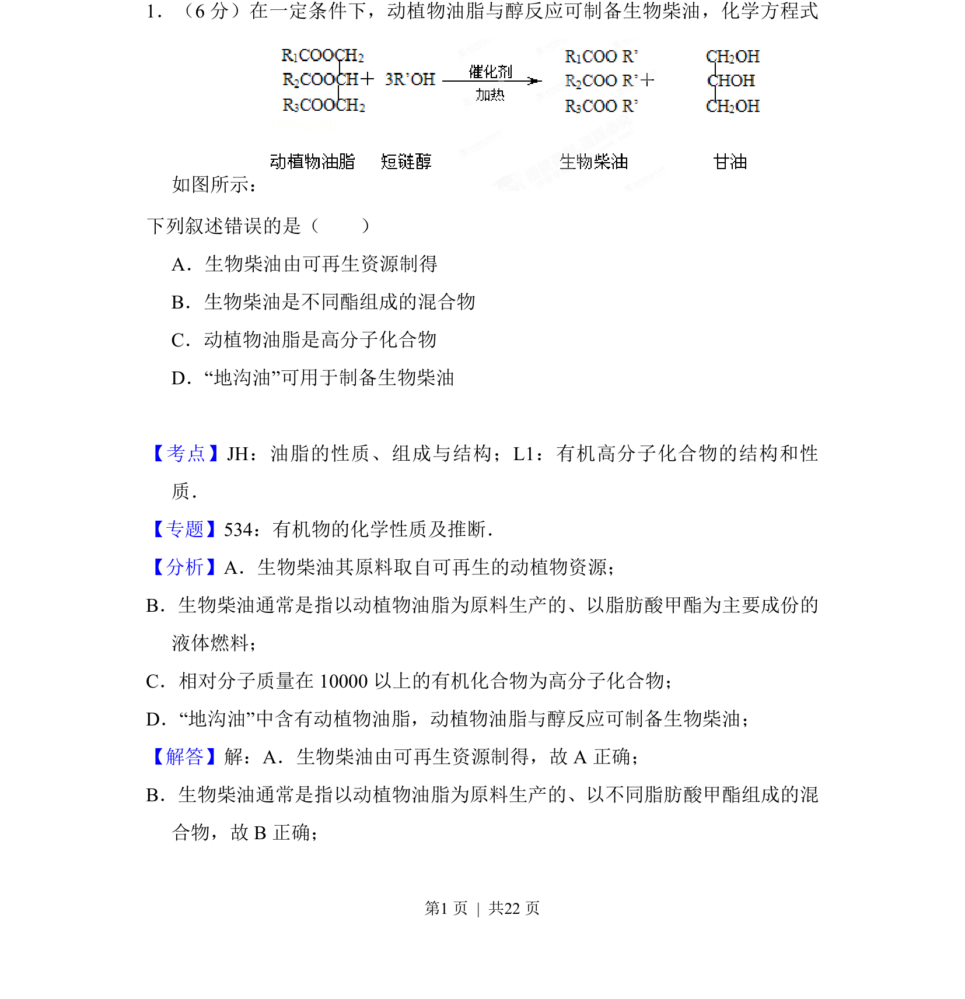
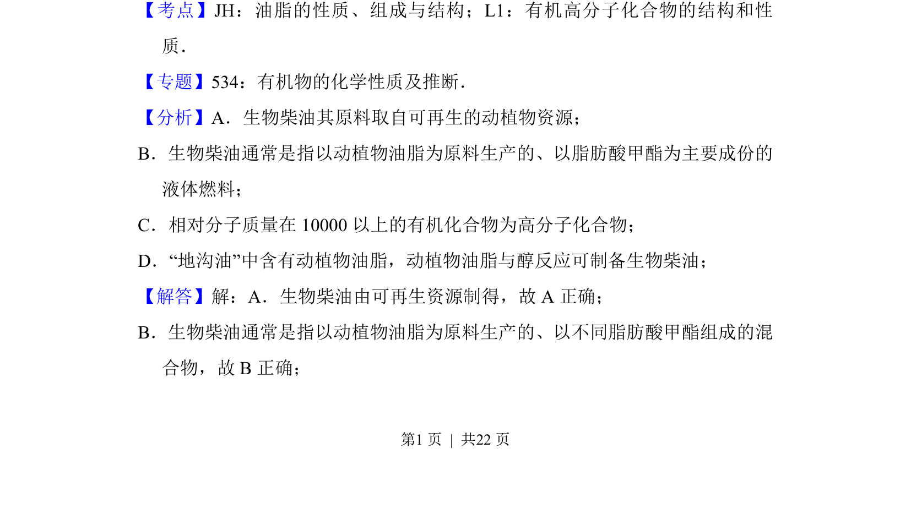
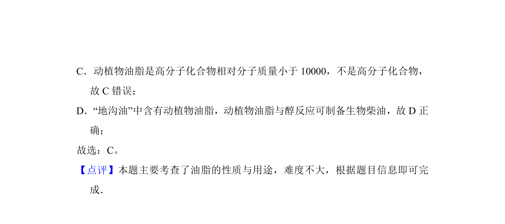

考点：油脂的性质 组成与结构 有机高分子化合物的结构和性质

本题考查生物柴油的成分、制备及油脂性质等有机化学基本概念


📄 原 PDF 第 1 页：
素材/真题/吉林/2008-2024·（吉林）化学高考真题/2013年高考化学试卷（新课标Ⅱ）（解析卷）.pdf
1．（6分）在一定条件下，动植物油脂与醇反应可制备生物柴油，化学方程式 如图所示： 下列叙述错误的是（ ） A．生物柴油由可再生资源制得 B．生物柴油是不同酯组成的混合物 C．动植物油脂是高分子化合物 D．“地沟油”可用于制备生物柴油
【考点】JH：油脂的性质、组成与结构；L1：有机高分子化合物的结构和性 质．菁优网版权所有 【专题】534：有机物的化学性质及推断． 【分析】A．生物柴油其原料取自可再生的动植物资源； B．生物柴油通常是指以动植物油脂为原料生产的、以脂肪酸甲酯为主要成份的 液体燃料； C．相对分子质量在10000以上的有机化合物为高分子化合物； D．“地沟油”中含有动植物油脂，动植物油脂与醇反应可制备生物柴油； 【解答】解：A．生物柴油由可再生资源制得，故A正确； B．生物柴油通常是指以动植物油脂为原料生产的、以不同脂肪酸甲酯组成的混 合物，故B正确；